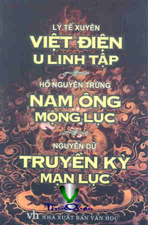

« Back
Nam Ông Mộng Lục
By Hồ Nguyên Trừng

Giới Thiệu Văn Bản
1. Truyện Nghệ Vương [1]
2. Trúc Lâm Thị Tịch [1]
3. Linh Hồn Ông Định Ngôi Cho Cháu [1]
4. Có Đức Ắt Có Địa Vị
5. Sự Kiên Trinh, Sáng Suốt Của Một Bà Phi
6. Nghe Tang Tắt Thở
7. Văn Trinh Cứng Cỏi Và Ngay Thẳng
8. Thầy Thuốc Có Lòng Nhân Từ
9. Dũng Lực Phi Thường
10. Vợ Chồng Chết Vì Tiết Nghĩa
11. Phép Thần Thông Của Tăng, Đạo
12. Tờ Tấu Thiên Đình Ứng Nghiệm
13. Áp Lãng Chân Nhân [1]
14. Sự Thần Dị Của Minh Không
15. Chiêm Bao Chữa Bệnh
16. Ni Sư Đức Hạnh
17. Vì Cảm Động Mà Đi Bộ
18. Thơ Điệp Tự
19. Ý Thơ Tươi Mới
20. Sống Ngay Thẳng, Chết Yên Lành
21. Thơ Hết Lòng Khuyên Can
22. Thơ Dùng Câu Hay Của Người Xưa
23. Thơ Nói Lên Lòng Tự Phụ
24. Thơ Rượu Kinh Người
25. Điểm Thơ Để Phúc Về Sau
26. Thơ Xứng Chức Tể Tướng
27. Thơ Viết Sự Nghiệp Giúp Vua [1]
28. Khách Quý Vui Vẻ Với Nhau